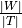
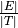
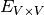
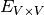
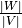
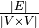
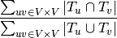
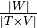
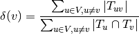
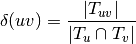

[1]:
import matplotlib.pyplot as plt
import straph as sg
[2]:
plt.rcParams["figure.figsize"] = (12,9)
Stream Graph Theory Properties¶
Most of the concepts described in the stream graph
formalism are implemented in Straph.
However some concepts also refer to graph theory to avoid any confusion in this section we focus
on specific stream graph theory properties.
[3]:
path_directory = "examples/"
S = sg.read_stream_graph(path_nodes=path_directory + "example_nodes.sg",
path_links=path_directory + "example_links.sg")
Number of Nodes and Links¶
The number of nodes is defined by .
[4]:
nb_nodes = S.nb_nodes()
nb_nodes
[4]:
4.4
If one wants the number of elements in  :
:
[5]:
len(S.nodes)
[5]:
6
The number of links is defined by 
[6]:
nb_links = S.nb_links()
nb_links
[6]:
2.0
If one want the number of distincts links in  (number of elements in ).
(number of elements in ).
[7]:
len(S.links)
[7]:
8
Nodes and Links duration¶
The node duration is defined by .
[8]:
node_duration = S.node_duration()
node_duration
[8]:
7.333333333333333
The link duration is defined by .
[9]:
link_duration = S.link_duration()
link_duration
[9]:
1.3333333333333333
Uniformity and Coverage¶
The uniformity is defined by

[10]:
unif = S.uniformity()
unif
[10]:
0.23795180722891565
The coverage is defined by .
[11]:
cov = S.coverage()
cov
[11]:
0.7333333333333333
Nodes and Links weights¶
Node and link weights capture information on nodes and links density over time:
[12]:
print("Node weight at instant 3 :", S.node_weight_at_t(3))
print("Link weight at instant 3 :", S.link_weight_at_t(3))
_ = S.plot_node_weight()
_ = S.plot_link_weight()
Node weight at instant 3 : 0.8333333333333334
Link weight at instant 3 : 0.26666666666666666

Node and Link Densities¶
A node density is defined by

[13]:
node_density = S.node_densities()
node_density
[13]:
Counter({0: 0.16666666666666666,
1: 0.17647058823529413,
2: 0.2,
3: 0.2857142857142857,
4: 0.35294117647058826,
5: 0.3103448275862069})
A link density is defined by

[14]:
link_density = S.link_densities()
link_density
[14]:
Counter({(0, 1): 0.625,
(1, 2): 0.3333333333333333,
(1, 4): 0.0,
(2, 3): 1.0,
(2, 4): 0.0,
(3, 4): 0.8,
(3, 5): 0.2,
(4, 5): 1.0})
Degrees and Expected Degrees¶
[15]:
degrees = S.graph_property(sg.nx_degree)
_ = S.plot(degrees,title="Degree")

[16]:
nodes_degree = S.degrees()
nodes_degree
[16]:
Counter({0: 0.5, 1: 0.6, 2: 0.2, 4: 1.2000000000000002, 3: 0.6, 5: 0.9})
[17]:
nodes_expected_degree = S.expected_node_degrees()
nodes_expected_degree
[17]:
Counter({0: 0.625,
1: 0.6,
2: 0.6666666666666666,
3: 1.2,
4: 1.2000000000000002,
5: 1.125})
[18]:
d_bar = S.average_degree()
print("Average degree of S :\t", d_bar)
print("Degree of S :\t \t", S.stream_graph_degree())
print("Expected degree of S :\t", S.expected_stream_graph_degree())
Average degree of S : 0.7454545454545456
Degree of S : 0.3333333333333333
Expected degree of S : 0.9090909090909091
Neighbors and Neighborhood¶
The neighborhood is defined by TODO
[19]:
Ngh = S.neighborhood()
Ngh
[19]:
{0: {1: [0.0, 4.0, 8.0, 9.0]},
1: {0: [0.0, 4.0, 8.0, 9.0], 2: [4.0, 5.0], 4: [7.0, 7.0]},
2: {1: [4.0, 5.0], 3: [0.0, 1.0], 4: [5.0, 5.0]},
3: {2: [0.0, 1.0], 4: [2.0, 4.0, 8.0, 10.0], 5: [3.0, 4.0]},
4: {1: [7.0, 7.0],
2: [5.0, 5.0],
3: [2.0, 4.0, 8.0, 10.0],
5: [0.0, 4.0, 6.0, 10.0]},
5: {3: [3.0, 4.0], 4: [0.0, 4.0, 6.0, 10.0]}}
[20]:
nb_neighbors = S.nb_neighbors()
nb_neighbors
[20]:
Counter({0: 1, 1: 3, 2: 3, 4: 4, 3: 3, 5: 2})
Clustering Coefficient¶
[21]:
cc = S.clustering_coefficient()
print("Clustering coefficient :", cc)
cc_bar = S.average_clustering(cc=cc)
print("Average clustering : \t", cc_bar)
Clustering coefficient : Counter({3: 1.0, 5: 1.0, 4: 0.25, 0: 0, 1: 0, 2: 0})
Average clustering : 0.3522727272727273